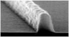

Chris's Papers on Line-Edge Roughness in Lithography
Line-edge roughness (LER) - The deviation of a feature edge (as viewed top-down) from a smooth, ideal shape.
LER is, in my opinion, the ultimate limiter of resolution in lithography, at least the way lithography is currently practiced. It's also a fascinating topic, since it requires a stochastic view of the world rather than the continuum view more commonly employed in lithography modeling. It is the current focus of my personal research.
The papers listed below are available (in PDF format) by clicking on the titles.
- Chris A. Mack, and Gian F. Lorusso, “Determining the ultimate resolution of scanning electron microscope-based unbiasedroughness measurements. I. Simulating noise”, Journal of Vacuum Science & Technology B, 37, 062903 (2019).
- Charlotte Cutler, Choong Bong Lee, James W. Thackeray, John Nelson, Jason DeSisto, Rochelle Rena, Peter Trefonas, and Chris Mack, “Roughness power spectral density as a function of aerial image and basic process/resist parameter”, Proc. SPIE 10960, Advances in Patterning Materials and Processes XXXVI, 109600I (2019).
- Chris A. Mack, Frieda Van Roey, and Gian F. Lorusso, “Unbiased Roughness Measurements: Subtracting out SEM Effects, part 3”, Proc. SPIE 10959, Metrology, Inspection, and Process Control for Microlithography XXXIII, 109590P (2019).
- Gian F. Lorusso, Vito Rutigliani, Frieda Van Roey, and Chris A. Mack, “Unbiased Roughness Measurements: Subtracting out SEM Effects, part 2”, Journal of Vacuum Science & Technology B, 36, 06J503 (2018).
- Gian Francesco Lorusso, Takumichi Sutani, Vito Rutigliani, Frieda van Roey, Alain Moussa, Anne-Laure Charley, Chris Mack, Patrick Naulleau, Chami Perera, Vassilios Constantoudis, Masami Ikota, Toru Ishimoto, Shunsuke Koshihara, “Need for LWR metrology standardization: the imec roughness protocol”, Journal of Micro/Nanolithography, MEMS, and MOEMS, 17(4), 041009 (2018).
- Chris A. Mack, “Reducing roughness in extreme ultraviolet lithography”, Journal of Micro/Nanolithography, MEMS, and MOEMS, 17(4), 041006 (2018).
- Chris A. Mack, “Shot noise: a 100-year history, with applications to lithography”, Journal of Micro/Nanolithography, MEMS, and MOEMS, 17(4), 041002 (2018).
- Gregory Blachut, Stephen M. Sirard, Andrew Liang, Chris A. Mack, et al., "Evolution of roughness during the pattern transfer of high-chi, 10nm half-pitch, silicon-containing block copolymer structures", Advanced Etch Technology for Nanopatterning VII, Proc., SPIE Vol. 10589, 1058907 (2018).
- Charlotte Cutler, James W. Thackeray, Jason DeSisto, et al., "Roughness power spectral density as a function of resist parameters and its impact through process", Optical Microlithography XXXI, Proc., SPIE Vol. 10587, 1058707 (2018).
- Andrew Liang, Chris Mack, et al., "Unbiased roughness measurements: the key to better etch performance", Metrology, Inspection, and Process Control for Microlithography XXXII. Proc., SPIE Vol. 10585, 1058524 (2018).
- Vito Rutigliani, Gian Francesco Lorusso, Danilo De Simone, et al., "Setting up a proper power spectral density (PSD) and autocorrelation analysis for material and process characterization", Metrology, Inspection, and Process Control for Microlithography XXXII, Proc., SPIE Vol. 10585, 105851K (2018).
- Gian F. Lorusso, Vito Rutigliani, Frieda Van Roey, and Chris A. Mack, "Unbiased Roughness Measurements: Subtracting out SEM Effects", Microelectronic Engineering, 190, 33-37 (2018).
- Chris A. Mack, "Reducing Roughness in Extreme Ultraviolet Lithography", International Conference on Extreme Ultraviolet Lithography, Proc., SPIE Vol. 10450 (2017) p. 10450OP-1.
- Chris A. Mack and Benjamin D. Bunday, "Using the Analytical Linescan Model for SEM Metrology", Metrology, Inspection, and Process Control for Microlithography XXXI, Proc., SPIE Vol. 10145 (2017) p. 101451R.
- Chris A. Mack, Timothy A. Brunner, Xuemei Chen, and Lei Sun, "Level crossing methodology applied to line-edge roughness characterization", Metrology, Inspection, and Process Control for Microlithography XXXI, Proc., SPIE Vol. 10145 (2017) p. 101450Z.
- Barton Lane, Chris Mack, Nasim Eibagi, and Peter Ventzek, "Global minimization line-edge roughness analysis of top down SEM images", Metrology, Inspection, and Process Control for Microlithography XXXI, Proc., SPIE Vol. 10145 (2017) p. 101450Y.
- Michael Adel, et al., "Impact of stochastic process variations on overlay mark fidelity towards the 5nm node", Metrology, Inspection, and Process Control for Microlithography XXXI, Proc., SPIE Vol. 10145 (2017) p. 1014509.
- Timothy A. Brunner, Xuemei Chen, Allen Gabor, Craig Higgins, Lei Sun, and Chris A. Mack, "Line-edge roughness performance targets for EUV lithography", Extreme Ultraviolet (EUV) Lithography VIII, Proc., SPIE Vol. 10143 (2017) p. 101430E.
- Chris A. Mack, “Uncertainty in roughness measurements: putting error bars on line-edge roughness”, J. Micro/Nanolith. MEMS MOEMS, 16(1), 010501 (2017).
- Chris A. Mack, "Biases and uncertainties in the use of autocovariance and height–height covariance functions to characterize roughness", Journal of Vacuum Science & Technology B, Vol. 34, No. 6 (Nov/Dec, 2016) p. 06K701.
- Chris A. Mack, "More systematic errors in the measurement of power spectral density", Journal of Micro/Nanolithography, MEMS, and MOEMS , Vol. 14, No. 3 (Jul-Sep, 2015) p. 033502.
- Chris A. Mack, "Understanding the efficacy of linewidth roughness post-processing", Journal of Micro/Nanolithography, MEMS, and MOEMS , Vol. 14, No. 3 (Jul-Sep, 2015) p. 033503.
- Chris A. Mack, "Line-Edge Roughness and the Impact of Stochastic Processes on Lithography Scaling for Moore’s Law", Photonic Innovations and Solutions for Complex Environments and Systems (PISCES) II, Proc., SPIE Vol. 9189, (2014) p. 91890D.
- Chris A. Mack, “Analytical Expression for Impact of Linewidth Roughness on Critical Dimension Uniformity”, Journal of Micro/Nanolithography, MEMS, and MOEMS, Vol. 13, No. 2 (Apr-Jun, 2014) p. 020501.
- Benjamin D. Bunday and Chris A. Mack, "Influence of Metrology Error in Measurement of Line Edge Roughness Power Spectral Density", Metrology, Inspection, and Process Control for Microlithography XXVIII, Proc., SPIE Vol. 9050 (2014) p. 90500G.
- Siddharth Chauhan, et al., “Mesoscale modeling: a study of particle generation and line-edge roughness”, Journal of Micro/Nanolithography, MEMS, and MOEMS, Vol. 13, No. 1 (Jan–Mar, 2014) p. 013012.
- Chris A. Mack, John J. Biafore, and Mark D. Smith, “Stochastic Exposure Kinetics of Extreme Utraviolet Photoresists: Trapping Model ”, Journal of Vacuum Science & Technology B, Vol. 31, No. 6 (Nov/Dec, 2013) p. 06F603-1.
- Chris A. Mack, “Defining and measuring development rates for a stochastic resist: a simulation study”, Journal of Micro/Nanolithography, MEMS, and MOEMS, Vol. 12, No. 3 (Jul-Sep, 2013) p. 033006.
- Chris A. Mack, "Systematic Errors in the Measurement of Power Spectral Density", Journal of Micro/Nanolithography, MEMS, and MOEMS, Vol. 12, No. 3 (Jul-Sep, 2013) p. 033016.
- Chris A. Mack, "Generating random rough edges, surfaces, and volumes", Applied Optics, Vol. 52, No. 7 (1 March 2013) pp. 1472-1480.
- Chris A. Mack, “Reaction-diffusion power spectral density” Journal of Micro/Nanolithography, MEMS, and MOEMS, Vol. 11, No. 4 (Oct-Dec, 2012) p. 043007.
- Chris A. Mack, “Correlated surface roughening during photoresist development”, Advances in Resist Technology and Processing XXIX, Proc., SPIE Vol. 8325 (2012) p. 83250I.
- Chris A. Mack, “Defining and measuring development rates for a stochastic resist”, Advances in Resist Technology and Processing XXIX, Proc., SPIE Vol. 8325 (2012) p. 83251K.
- Chris A. Mack, "Analytic form for the power spectral density in one, two, and three dimensions", Journal of Micro/Nanolithography, MEMS, and MOEMS, Vol. 10, No. 4 (Oct-Dec, 2011) p. 040501.
- Chris A. Mack, James W. Thackeray, John J. Biafore, and Mark D. Smith, “Stochastic Exposure Kinetics of EUV Photoresists: A Simulation Study”, Journal of Micro/Nanolithography, MEMS, and MOEMS, Vol. 10, No. 3 (Jul-Sep, 2011) p. 033019.
- Chris A. Mack, John J. Biafore, and Mark D. Smith, “Stochastic Acid-Base Quenching in Chemically Amplified Photoresists: A Simulation Study”, Advances in Resist Technology and Processing XXVIII, Proc., SPIE Vol. 7972 (2011) p. 79720V.
- Chris A. Mack, “Stochastic modeling of photoresist development in two and three dimensions”, Journal of Micro/Nanolithography, MEMS, and MOEMS, Vol. 9, No. 4 (Oct-Dec, 2010) p. 041202.
- Chris Mack, “A Simple Model of Line-Edge Roughness”, Future Fab International, Vol 34 (July 14, 2010).
- Chris A. Mack, “Line-Edge Roughness and the Ultimate Limits of Lithography”, Advances in Resist Technology and Processing XXVII, Proc., SPIE Vol. 7639 (2010) p. 763931.
- Chris A. Mack, “Impact of mask roughness on wafer line-edge roughness”, BACUS Symposium on Photomask Technology, Proc., SPIE Vol. 7488 (2009) p. 748828.
- Chris A. Mack, “Stochastic Modeling in Lithography: The Use of Dynamical Scaling in Photoresist Development”, Journal of Micro/Nanolithography, MEMS, and MOEMS, Vol. 8, No. 3 (Jul-Sep, 2009) p. 033001.
- Chris A. Mack, “Stochastic Modeling in Lithography: Autocorrelation Behavior of Catalytic Reaction-Diffusion Systems”, Journal of Micro/Nanolithography, MEMS, and MOEMS, Vol. 8, No. 2 (Apr-Jun, 2009) p. 029701.
- Chris A. Mack, “Stochastic approach to modeling photoresist development”, Journal of Vacuum Science & Technology, Vol. B27, No. 3 (May/Jun, 2009) pp. 1122-1128.
Back to the Publications Home ...